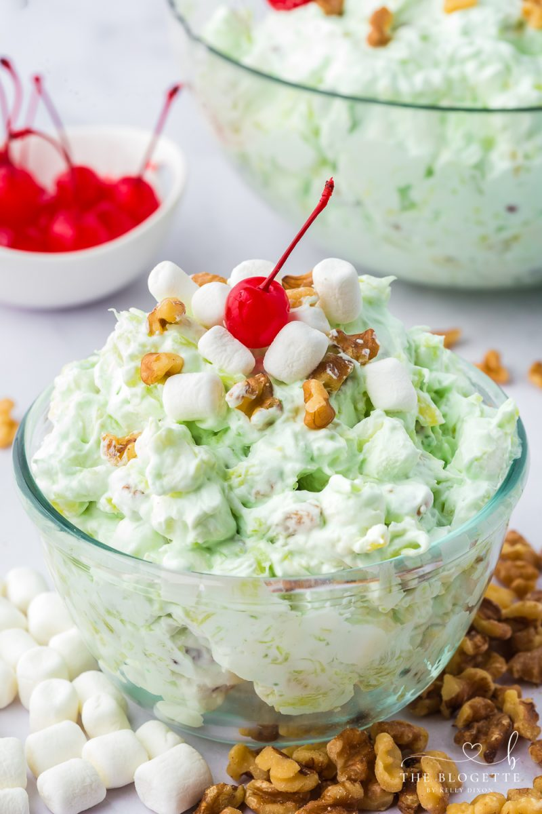

Back to recipes
Water Gate Salad
A refreshing salad perfect for a light meal or side dish.

Ingredients:
- 2 cups mixed greens
- 1 cup cherry tomatoes, halved
- 1 cucumber, sliced
- 1/2 cup red onion, thinly sliced
- 1/4 cup feta cheese, crumbled
- 2 tablespoons olive oil
- 1 tablespoon lemon juice
- Salt and pepper to taste
Instructions:
- In a large bowl, combine the mixed greens, cherry tomatoes, cucumber, and red onion.
- In a small bowl, whisk together the olive oil and lemon juice.
- Pour the dressing over the salad and toss to coat.
- Top with crumbled feta cheese and season with salt and pepper.
- Serve immediately and enjoy!